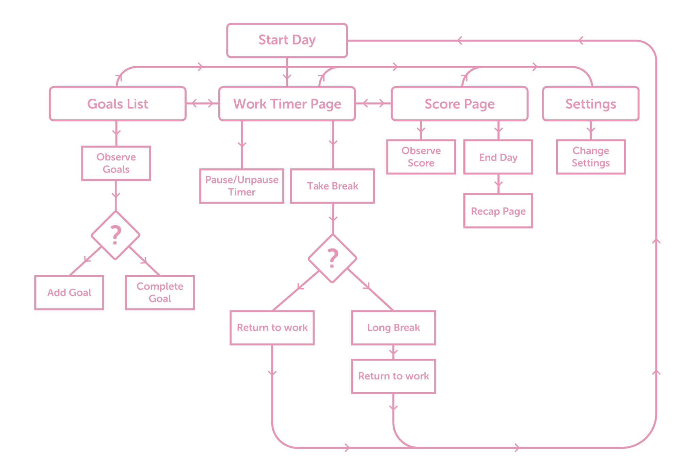

My strategy is to do things that give me time to think, walking being my favourite activity for that. I go on a walk almost daily and try my best to get at least an hour to devote to that activity. I can then spend a bit of time focusing on my thoughts without interruption.
- James March
what
An app for creatives who seek a more efficient & productive day via a structured pulse/pause workflow.
20-90
Work (min)
5-20
Break (min)
why
Productivity Benefits
Increase focus and reduce burn-out
Mental Benefits
Reduce stress and assist creativity
Health Benefits
Counteract the negatives of sitting
Utilizing PACT Analysis
People
busy minded, stressed creative people
Activities
follow the timer. It alerts you when needed
Contexts
for use at home or in a busy office
Technologies
Interaction via touchscreen. Screen based cues to limit annoyance for others
Pulse and Pause. Move rhythmically between spending and renewing your energy by working in bursts and then taking a break.
- Tony Schwartz
Flowchart
Thank you.
I could be convinced to make Turnip into a real app. Feel free to email me if you'd like that!